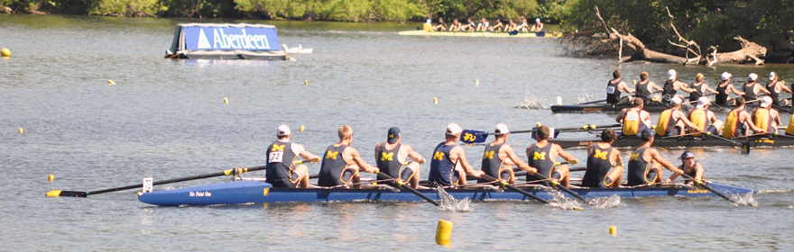

|

About
This camp for strong and experienced male high school rowers recreates the Spring Break training week of a top collegiate program. On-water workouts will incorporate drill work, steady state and speed work rows, and seat racing and selection. This camp is specifically designed for top high school rowers who want an opportunity to train with a group of likeminded athletes from across the country and experience a collegiate training environment.
Integrated into the week will be on-land sessions and talks given by the coaching staff on:
- Video review of each rower
- Understanding the “whys” of technique
- Effective training and testing on the erg
- Rowing and nutrition
- Rowing in college
The camp will start on Monday, July 14 in Ann Arbor. Rowers will check in between 2 and 3:30pm at the team’s boathouse at 1350 Lake Shore Drive in Ann Arbor. After check-in the athletes will go on a tour of campus and then the team will depart for Traverse City and Fountain Point Resort. The athletes will train there Tuesday through Friday morning. We will return to Ann Arbor Friday afternoon for a row out on the race course in preparation for racing the next day.
At the week’s end, camp athletes will compete in the Michigan Club Invitational on Argo Pond in Ann Arbor, site of the Michigan Men’s boathouse. Athletes will race in selected lineups in both eights and fours. The camp will conclude following the racing Saturday afternoon.
Eligible Athletes
Because of the camp’s intensive training structure and focus on racing at the end of the week, this camp is restricted to experienced male rowers and coxswains. We recommend having a minimum of 2 years of rowing and racing under their belts. The suggested erg scores are in place to ensure that all attendees will be able to keep up with the camp’s intense nature.
We do stress however that each athletes experience is going to be examined individually and we invite all rowers interested to apply, for many rowers who do not spend time training all winter on the erg will have a slightly slower erg score then a rower who does.
Each athlete must complete the camp application and submit a coach’s evaluation to ensure that all athletes will be adequately prepared for the camp. Applications will be reviewed by the coaching staff and will take into account how long and at which program each athlete has been rowing in offering rowers spots in the camp.
Suggested minimum 2k erg standards, rowers weighing:
- less than 165 lbs: under 6:55
- 165 lbs-185 lbs: under 6:45
- more than 185 lbs: under 6:40
Camp Location, Housing and Food
The camp will be based out of the Fountain Point Resort, on the Leelenau Peninsula, near Traverse City in Northern Michigan. Founded in 1889, Fountain Point is Michigan’s oldest family-style summer resort, and is listed on the National Register of Historic Places.
Fountain Point sits on the shore of Lake Leelenau, which provides over 20 miles of protected water, perfect for both technical and hard training rows. It is one of the nation’s most beautiful rowing venues.
The camp will have exclusive use of the resort’s original hotel building, which sleeps 32 people and includes large public gathering spaces and a kitchen. All meals (pre-morning row continental breakfast, brunch, pre-afternoon row snack and dinner) will be provided.
Athletes will be supervised throughout the day and night by members of the University of Michigan Men’s Rowing team, who will serve as camp counselors. The coaching staff will be staying in cottages nearby on the resort premises.
We will return to Ann Arbor on Friday afternoon, with enough time for a row-out before racing on Saturday. The rowers will stay in an Ann Arbor area hotel on Friday night.
Transportation
Athletes will report to and be picked up from the teams boathouse in Ann Arbor. Airport pickup will be available for athletes flying into Detroit Metro Airport (DTW). The rowers will be bused to and from Fountain Point Resort, which is four hours northwest of Ann Arbor.
Cost
The camp fee is $1300. A non-refundable $500 deposit is due within two weeks of the offer of a spot in the camp. Full payment is due by July 1, 2013. The camp fee includes coaching, housing, meals, racing entry fees, racing attire, transportation and dorm supervision.
Registration
Athlete applications will be reviewed by the coaching staff on a rolling basis. All decisions will be made by May 31, 2014.
To register, follow these steps:
Step 1: Complete
Online Camp Application by June 15, 2014.
Confirmation of your application will be sent via email.
Step 2: Have your coach complete the
Athlete Evaluation.
After you have been offered a spot, you must complete the following to hold your spot.
Step 1: Pay deposit of $500 made out to UMRT.
Step 2: Complete and return your medical history and release and consent form.
Frequently Asked
Questions
How is this camp different from others?
The goal of this camp is to give top high school rowers the opportunity to experience a high-level collegiate spring training week. Athletes will pull the same workouts that have produced multiple national champions and Olympians. At the end of the week the team will race against competition from throughout the Midwest in selected lineups.
Why is this
camp being held in Northern Michigan and not on campus?
Our partnership with Fountain Point Resort allows us to row at one of the nation’s best rowing venues. Additionally, the resort itself has the feel of a great old summer hotel, the essence of a Michigan summer. The exclusive use of their hotel building will give the camp a focus and a center, away from the distractions of campus. Nonetheless, we will make time on Friday to give the camp participants the opportunity to experience both the Michigan campus and the city of Ann Arbor around it.
What supervision is provided?
Campers are supervised throughout the day and night by both the coaching staff and members of the Men’s rowing team who will be serving as camp counselors.
What should athletes bring to camp?
Athletes should bring sunscreen, water bottle, hat and sunglasses and plenty of spandex.
When/ where will check-in occur?
Check-in will take place on Monday, July 14at the Michigan Men’s Rowing boathouse at 1350 Lake Shore Drive from 2-3:30pm. The team will leave for Traverse City immediately thereafter.
A Coaching Mentorship Program is available for this camp, tailored for high school/ junior varsity coaches or new ACRA college coaches.
|